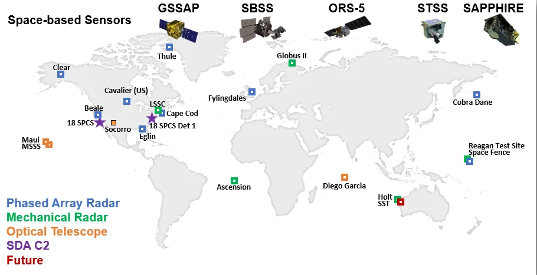
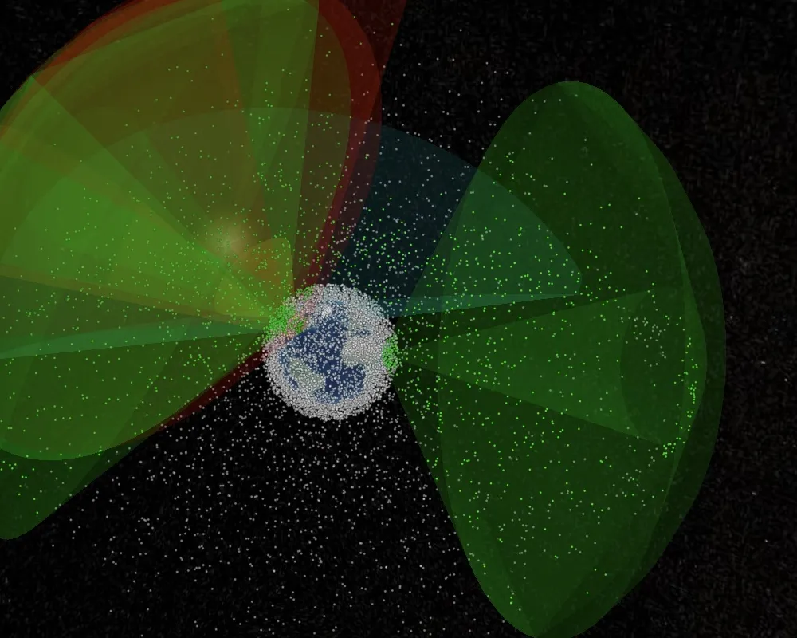
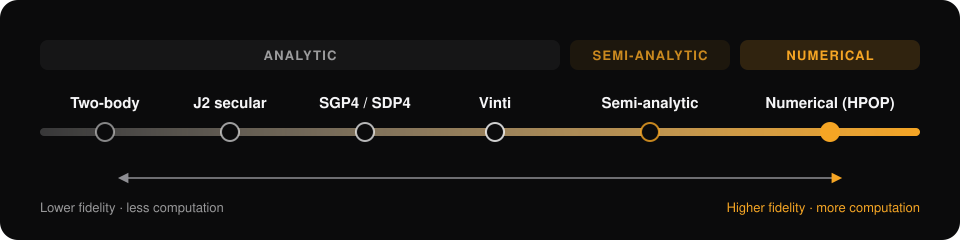
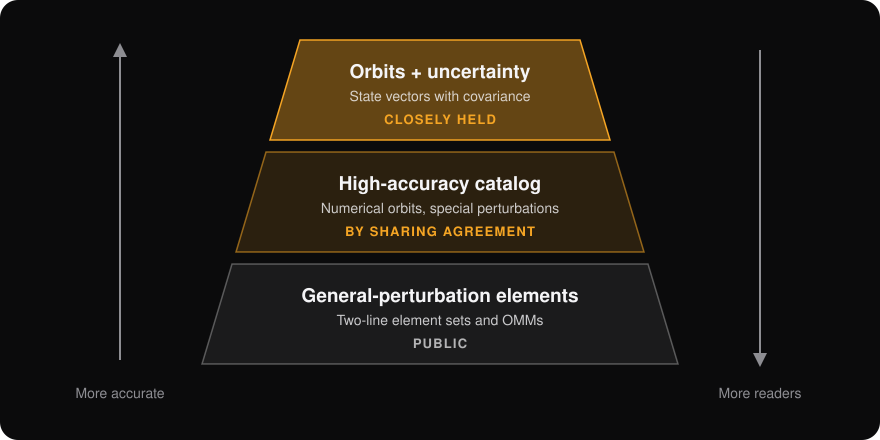
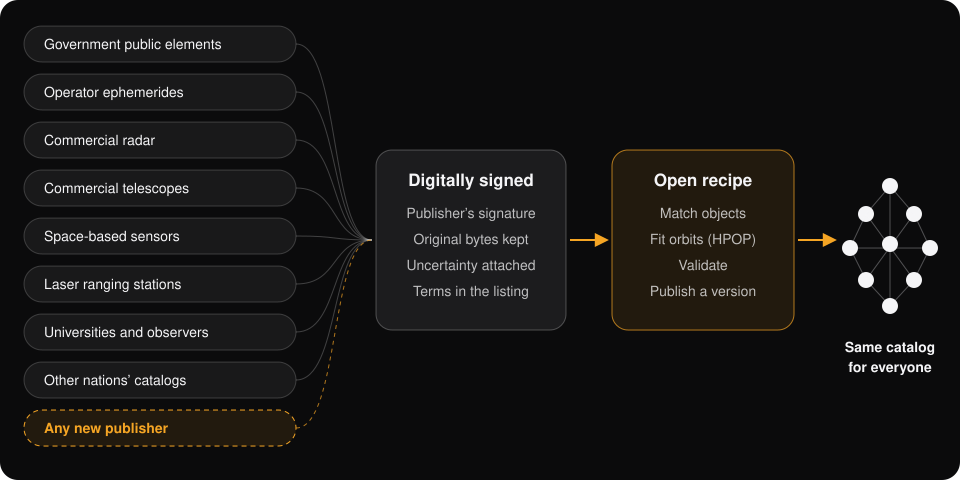
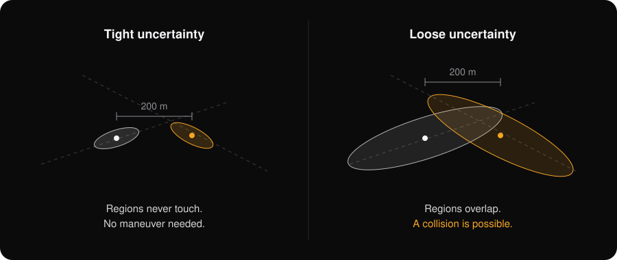
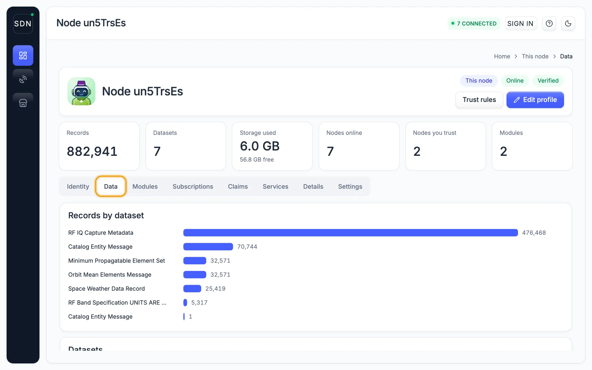

Catalogs
How A Space Catalog Is Built
Every collision warning starts with a catalog: where each tracked object is, and how sure anyone is about it. Here is how the military builds one, and how the network builds one that anyone can add to and check.
Part one
The Military Catalog
Fixed sensors, one operations center, and three tiers of access.
1
A fixed network of sensors
The U.S. Space Surveillance Network is about thirty radars and telescopes around the world, plus a few satellites. Phased-array radars watch low Earth orbit and routinely track objects down to about 10 cm. Telescopes watch the geostationary belt on clear nights. Some sites track space full time. Others share time with missile warning.

2
Observations go to one operations center
Each site reports angles, range and range rate for what it sees. At Vandenberg Space Force Base, the 18th Space Defense Squadron matches every observation to a catalog object, flags new and maneuvering objects, and refits their orbits. No site sees everything, so each orbit is rebuilt from a few passes by a few sensors.

3
From simple models to high-fidelity ones
An orbit model is not a yes-or-no choice between “good” and “rough.” Models form a spectrum. Each step adds forces or keeps terms the simpler ones drop, and costs more computation. The military catalog publishes products from two points on it: SGP4 element sets and numerical special-perturbation orbits.

| Model | What it includes | Where it fits |
|---|---|---|
| Two-body (Keplerian) | Earth as a point mass. A closed-form ellipse. | Quick looks and first guesses. In low orbit it drifts off within hours, because Earth’s bulge alone turns an orbit plane by several degrees a day. |
| J2 secular | The average effect of Earth’s oblateness on the orbit plane and perigee. | Mission planning, constellation design and sun-synchronous orbits. |
| SGP4 / SDP4 | An analytic general-perturbations theory: mean elements, zonal gravity terms, a simple drag term, and Sun, Moon and resonance terms for deep space. | The public element sets (two-line element sets and OMMs). Must be run with the same theory the elements were fit with. Good to about a kilometer near epoch, with errors growing by kilometers a day in low orbit. |
| Vinti | An analytic solution in oblate spheroidal coordinates that carries Earth’s oblateness exactly, and much of the next zonal terms, instead of as a series approximation. | Fast, accurate zonal-gravity propagation where drag is small or handled separately. |
| Semi-analytic (for example DSST) | Averages out the fast, short-period motion, integrates the slowly changing mean elements with large steps, then adds the short-period terms back. | Long spans at modest cost: geostationary and high orbits, lifetime and reentry studies. |
| Numerical (HPOP) | Direct integration of the equations of motion with a high-degree gravity field, atmospheric drag from a density model corrected by observations, the Sun and Moon, solar radiation pressure, tides and relativity. | The high-accuracy catalog, precise ephemerides and conjunction screening, when the inputs support it. |
Fidelity is not the same as accuracy
A high-fidelity model fed a stale state or a wrong drag estimate can predict worse than SGP4 fit to fresh tracking. The right model depends on the orbit regime, how far ahead you need to predict, and how good the data is. Fitting is a separate step: batch least squares or a sequential filter estimates the state, and often drag and radiation-pressure parameters, that best match the observations under whichever model is chosen.
4
Who gets what
One catalog is released in three tiers. The more accurate the product, the fewer people can read it.

| Product | What it holds | Who can read it |
|---|---|---|
| General-perturbation element sets | Mean elements for the public catalog | Anyone with a free account on Space-Track.org |
| High-accuracy catalog | Numerical special-perturbation orbits | Operators and governments with a sharing agreement |
| Vector covariance messages | State vectors with full covariance | Closely held to protect sensor capabilities; released case by case |
| Conjunction data messages | One close approach, with both objects’ uncertainty | Free, to the operators involved |
5
Where the model strains
Accuracy follows access
The best orbits and their error bubbles reach whoever holds an agreement. Everyone else screens with less.
Terms stay private
Access is negotiated one deal at a time. Nobody outside a deal can see what its data may be used for.
Warnings can’t be checked
Operators get the answer, not the catalog behind it. Private catalogs repeat the pattern: send your ephemeris in, get warnings out.
Free isn’t open
A free service that collects every operator’s orbits improves with each one that joins, and what it learns stays with its owner.
Part two
The Network Catalog
No single sensor network sees everything. The network takes data from any number of sources, keeps each one digitally signed with its uncertainty attached, and publishes the recipe that combined them.

- PublishA sensor operator, satellite owner or lab digitally signs each record with its own private key and publishes it from its node. No contract, no gatekeeper.
- Keep the originalNodes store the exact bytes with the publisher’s digital signature. Reprocessing never overwrites a provider’s record.
- MatchRecords from different sources are matched to one physical object by designator, history and trajectory. Ambiguous matches stay separate.
- FitEach orbit is fit with the model its evidence supports, up to full numerical propagation (HPOP). Every record names its model, so one theory’s elements are never run through another’s propagator.
- Publish a versionEach catalog version names its inputs, its recipe and the exact modules that ran. Anyone can rerun it.
- ScreenConjunction screening runs as open WebAssembly modules. Operators can screen a maneuver encrypted, without handing it to a competitor.
Uncertainty travels with the orbit
A miss distance alone can’t separate a near miss from a non-event. When a source provides covariance, the network carries it with the orbit in an Orbit Comprehensive Message. A record without covariance is labeled that way. The network never invents one.

Every record carries a digital signature
Each node shows what it holds and whose digital signature each record carries. This node carries 882,941 digitally signed records across seven datasets, including orbit elements, catalog entries and space weather.

Side by side
Tiered Catalog Or Open Catalog
| Tiered catalog | Network catalog | |
|---|---|---|
| Who can add data | Sensors under contract | Anyone with a node and a key |
| Who reads the best orbits | Agreement holders | Anyone, on the published terms |
| Uncertainty | Withheld from most users | Carried with the orbit whenever the source has it |
| Terms of use | Private, deal by deal | Published in each digitally signed listing |
| Checking a result | Not possible from outside | Rerun the recipe on the same inputs |
| Your ephemeris | Feeds someone else’s catalog | Stays yours; screen it encrypted |
| If a provider leaves | The data stops | Digitally signed copies stay on other nodes |
Methods, measured results and open work are in the Evidence-Supported ASO Catalog whitepaper.
Add Your Source
Radar, telescope, star tracker, laser ranging or your own ephemerides. Run a node, digitally sign your data and set your own terms.